Project 01
Savor — Ingredient-First Recipe Discovery
The real reason people don't use what's in their fridge
Food waste is enormous. The average American household throws away nearly $1,500 worth of food per year. Most sustainability-focused apps approach this as an environmental problem — framing it around carbon footprints, landfill data, and the moral weight of waste. We had a hunch that framing wasn't working.
We ran a survey of 37 participants across different cooking habits and household types to understand how people actually thought about unused ingredients — and what, if anything, would motivate them to cook with them instead of letting them spoil.
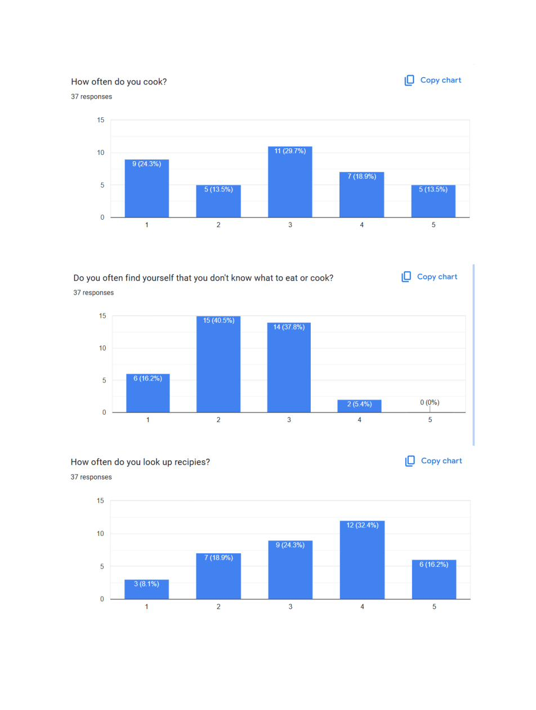
Survey results (37 respondents): cooking frequency, recipe confusion, and how often people look up recipes.
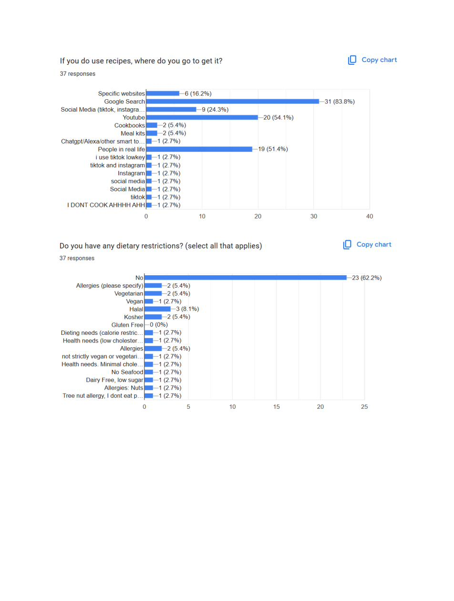
Where people look for recipes (Google Search at 83.8%, people in real life at 51.4%) and the variety of dietary needs we'd need to accommodate.
Key findings from the survey and follow-up interviews:
78% don't know what to cook
The majority of respondents (ratings 2–3 out of 5) regularly found themselves not knowing what to eat or cook — even with a full fridge.
83.8% use Google for recipes
Most people use Google Search first. A purpose-built tool would only win if it was faster, more personalized, and more trustworthy than a search results page.
It's about the money
In interviews, users who expressed interest in reducing waste consistently cited throwing away money — not environmental impact — as their actual motivation.
Top fridge staples
Most purchased: Eggs (20), Rice (14), Chicken (13), Milk (8), Bread (7) — the ingredient-first interface needed to serve these common starting points.
Reframing sustainability as financial self-interest
This reframe shaped every design decision in Savor. Instead of a "reduce your waste" message, we leaded with cost per serving and ingredient match — making the financial benefit of cooking what you have visible at every step.
We also needed to accommodate real dietary complexity. Our survey revealed 38% of respondents had some dietary restriction: Halal, gluten-free, allergies, low-cholesterol, dairy-free. The filtering system had to be robust enough to be genuinely useful, not performative.
The core features we defined:
Ingredient-input search
Enter what you have → get recipes that use those exact ingredients, ranked by match quality and cost per serving.
Dietary filter system
Multi-select restrictions (Halal, vegan, gluten-free, nut-free, etc.) that persist across searches and can be set once in profile.
Price range slider
Per-person cost filter — because "cheap" means different things to a college student and a parent of four.
Community + Discovery
Browse by category, discover trending recipes, and share personal recipes with the community — making the app useful even when you know what you want to cook.
From icons to interface: building the Savor system
The design process started with branding — because Savor needed a personality distinct from the clinical, calorie-counter aesthetic of most food apps. We developed a warm, friendly visual language: amber and off-white, an illustrated food mascot character, and hand-drawn icon assets that felt approachable and slightly playful.
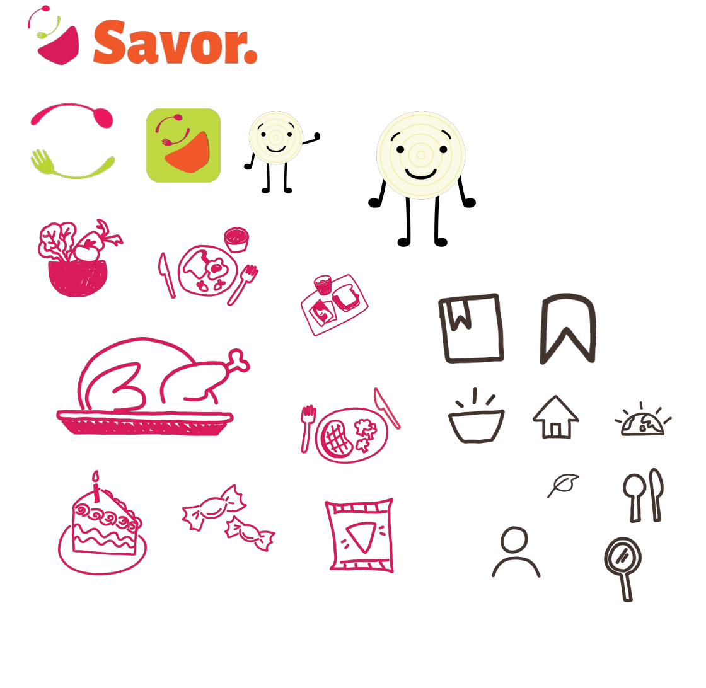
Brand system: the Savor logo, app icon variants, the mascot character, and hand-drawn food and UI icon set.
From there, wireframes established the navigation structure and core interaction patterns before moving to high-fidelity. The challenge in wireframing the home screen: how do you surface the ingredient-input feature prominently without burying discovery and community content?
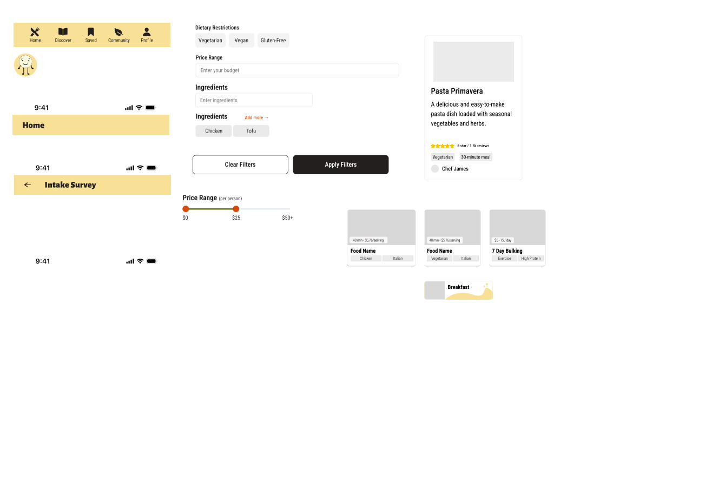
Early wireframes exploring the home screen layout, filter panel, and recipe card structure.
High-fidelity screens
The login and onboarding screens established the brand tone immediately — warm, animated, and with an intake survey that captured dietary restrictions upfront so they never had to be set again.


Login screen (left) and the core home screen (right) — ingredient input, dietary restrictions, cuisines, and price range all surfaced on arrival.

Recipe results page — cost per serving and cooking time shown upfront, with tag-based filtering visible on the results themselves.
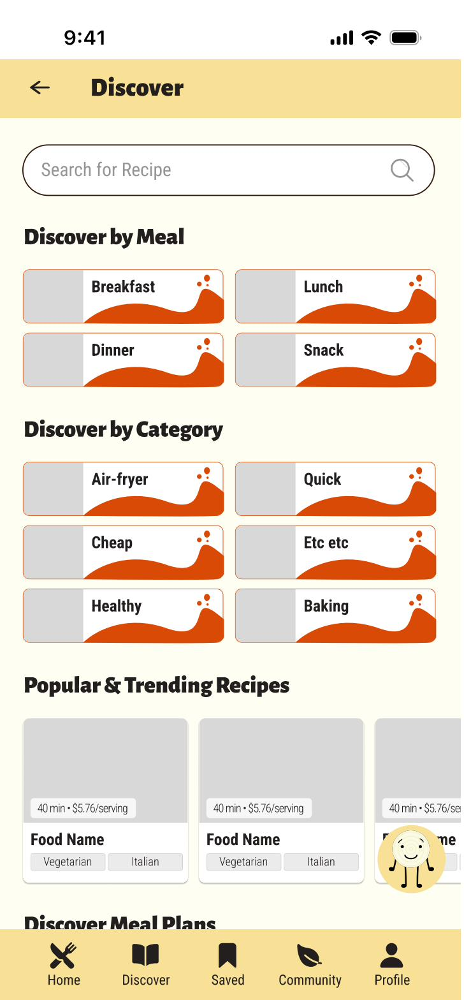
The Discover screen — organized by meal type and category, with trending recipes below. Makes the app useful for spontaneous browsing, not just ingredient-driven search.
The reframe that made it work
The most important design decision in Savor had nothing to do with the interface — it was the decision to lead with financial value instead of sustainability messaging. That insight came directly from the interviews, not from assumptions. Without the research, we would have built a perfectly competent app that no one actually opened twice.
The design challenge that remains: recipe recommendation relevance. Ingredient-based matching is harder than it looks — two people with the same four ingredients might want wildly different things based on their energy level, cooking skill, and what they had for lunch. The next iteration would invest in a more nuanced preference model, informed by usage patterns and explicit user feedback on recipe quality.
Project 02 — Predecessor Study
Cookin' Cubby — The Earlier Iteration
Before Savor, there was Cookin' Cubby
Cookin' Cubby was an earlier project exploring the same problem space — helping people cook smarter with what they have. It's worth including here not just as a "v1," but because the research conducted for Cookin' Cubby directly shaped the decisions that made Savor stronger. This is what an iterative design process actually looks like: the first version reveals what the second version needs to be.
Cookin' Cubby approached the problem from a slightly different angle: a recipe community platform with ingredient-based search, bookmarking, a community forum, and recipe upload capability. More features, broader scope — and in retrospect, less focused than it needed to be.
Survey data that drove feature priorities
The same 37-person survey that informed Savor was originally conducted for Cookin' Cubby. From the survey data, the team identified the features users most wanted in a recipe app:
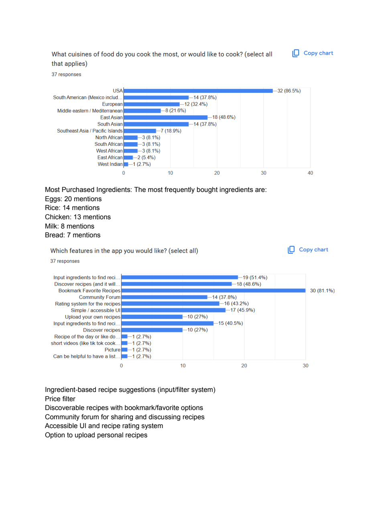
Survey analysis: ingredient-based recipe suggestions, price filters, bookmarking, and community features ranked highest among desired capabilities.
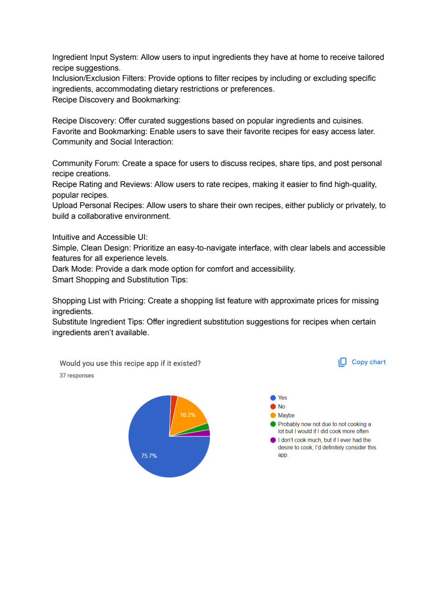
Feature requirement synthesis: inclusion/exclusion filters, recipe discovery, community interaction, and simple/accessible UI all surfaced as priorities.
The top requested features from this research:
Ingredient input + filter system
Allow users to input what they have and receive tailored suggestions, with inclusion/exclusion filtering for dietary restrictions.
Discovery + bookmarking
Curated suggestions based on popular ingredients and the ability to save favorite recipes for later — two of the highest-requested features.
Community forum + recipe upload
A space for users to share recipes, discuss tips, and post reviews — building a collaborative, trust-based environment.
Accessible, clean UI + dark mode
Simple navigation, clear labeling, and comfort options like dark mode — accessibility wasn't an afterthought, it was a top-five request.
What Cookin' Cubby taught us to do differently
Cookin' Cubby tried to do too much at once. The community forum, recipe upload, and social features added complexity without adding enough value for the primary use case — figuring out what to cook tonight. The scope made every individual feature feel underdeveloped.
Savor stripped back to the core: ingredient-first search with excellent filtering and real cost data. The community and discovery features stayed, but they were secondary — not co-equal to the core job-to-be-done.
The branding also shifted significantly. Cookin' Cubby was playful but undefined. Savor's amber-and-cream palette with the hand-drawn mascot character gave the app a consistent, ownable personality — one that could carry across marketing, onboarding, and empty states without feeling forced.
Project 03 — UX Redesign Study
MyFitnessPal — Redesign Study
A beloved app with real UX debt
MyFitnessPal is one of the most widely used food and fitness tracking apps in the world — but its interface carries years of accumulated design debt. The redesign study began with a comprehensive UX audit: cataloging usability issues, inconsistent patterns, and structural problems in the existing app before proposing solutions.
The core issues identified:
Navigation overload
The bottom nav (Logs, Goals, Dashboard, Community, Profile) and the top tabs (Recipe/Meal/Foods; Friends/News/Find Plan/Forum) created two competing navigation systems with unclear hierarchy.
Ad placement breaks flow
Large banner ads appear immediately after logging food, interrupting the most frequent user action. The "Go Premium" nudges were pervasive and aggressive.
Onboarding skips personalization
The existing onboarding doesn't establish enough context about user goals before surfacing the daily calorie dashboard — resulting in a generic first experience.
Community feels tacked-on
The community feed and friend activity sections use inconsistent card patterns and don't clearly connect social activity to personal progress.
Respecting the brand while solving real problems
The design system study established that MyFitnessPal's existing brand — blue/yellow/black, Helvetica Neue, clean and confident — was still strong. The redesign didn't need to change the brand; it needed to apply it more consistently and clear the interface of friction.
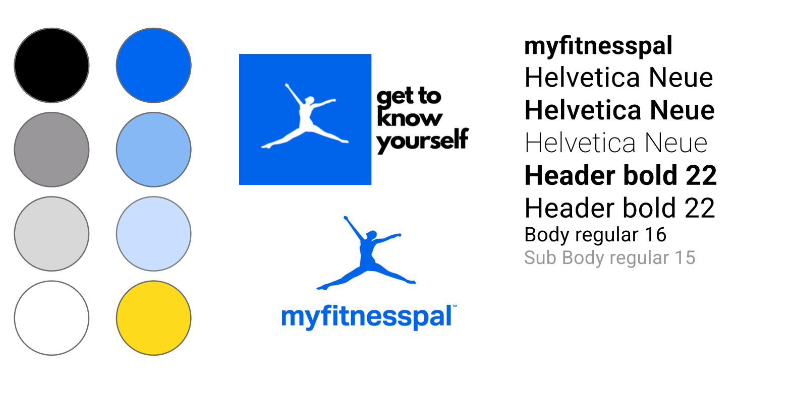
Design system study: the existing MFP color palette and type scale were sound — the redesign preserved them while addressing structural issues.
Key redesign decisions
The most significant intervention was the onboarding flow. Rather than jumping straight to calorie tracking, the redesigned onboarding asks one meaningful question up front: "When it comes to improving your health, which is most important?" The answer (weight, general health, health metrics, or becoming more active) shapes the dashboard that appears on first login — so the experience feels built for you, not just a blank calorie counter.
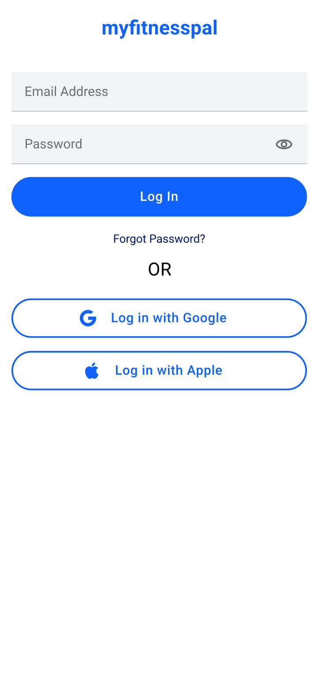
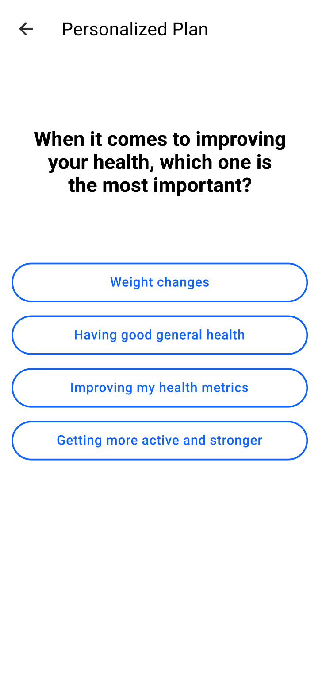
Redesigned login (left) — cleaner, less noisy. Redesigned onboarding goal selection (right) — one question that makes the rest of the experience feel personal.
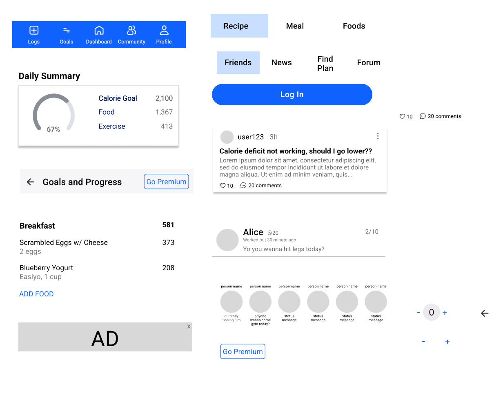
Redesigned daily summary and community screens — decluttered navigation, removed ad banner, and a community feed with consistent card treatment.
What this study contributed
The MFP redesign was a structured exercise in designing within constraints: you can't change the business model (so the Premium upsell stays, it just moves), you can't break existing mental models (so the nav labels stay, just reorganized), and you can't start from scratch (so every decision has to justify itself against the existing design). This is closer to most real-world design work than starting from a blank canvas — and it made me a sharper critic of my own design choices.
What this body of work taught me about food and design
Food is intensely personal. Cultural background, budget, health history, family size, cooking skill, and time available all shape what a "helpful" recipe app actually looks like for any given person. Designing in this space means resisting the temptation to generalize — and building systems that can flex to individual difference without falling apart.
The thread connecting all three projects: the importance of identifying the real motivation before designing the solution. "Reduce food waste" isn't why people open a recipe app. "I don't know what to make with what I have and I hate wasting money" is. "Get healthy" isn't why people open a fitness tracker. "Hit my calorie goal today so I feel in control" is. The specificity of the motivation determines the specificity of the design — and specificity is what makes something feel like it was made for you.